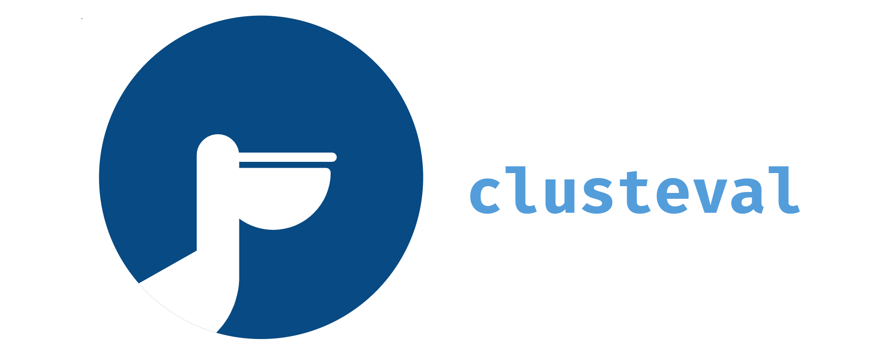

 |


clusteval is a python package for unsupervised cluster evaluation. Three evaluation methods, Silhouette, DBindex, and Derivative are implemented that can be used to evalute clusterings for four clustering methods agglomerative, kmeans, dbscan and hdbscan.
Note
Your ❤️ is important to keep maintaining this package. You can support in various ways, have a look at the sponser page. Report bugs, issues and feature extensions at github page.
pip install clusteval
Content
Background
Installation
Evaluation Methods
Examples
Documentation